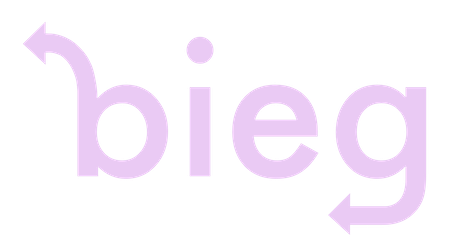

Welcome to bieg2D! This is a simple C++ - powered engine, designed for developer ease of use. It’s free, open-source, and works on Windows, macOS, and Linux!
The engine is licensed under the zlib/libpng license, which means it’s free to use for personal and commercial purposes. No limitations!
[[Download Here!]]
[[scripting_doc|scripting_doc]] [[get_started]] [[Engine Source]]
[[Sketchbook]]